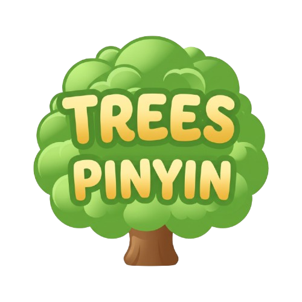

✕ Exit Fullscreen

Trees Pinyin
📲 Safari Icon
中文
✨ AI Reply & Pinyin
📝 Translate & Pinyin
🔊 Speak
💡 Tap any Chinese character to edit pinyin
🔄 Big Screen
💾 Save Photo
🖨️ Print
🎯 Keep Key Points Only
🌶️ + Mild Spicy, No Cilantro
✂️ Shorter
🙏 More Polite
💬 Modify
Long-Press Image to Save
Done
📲 Add Icon to Home Screen
Trees Pinyin Official App
⚠️ Please open
treespinyin.com/app
in Safari:
1. Tap the
Share button [📤]
at the bottom of Safari.
2. Scroll down and tap
"Add to Home Screen [➕]"
.
3. Tap
"Add"
at the top right.
OK